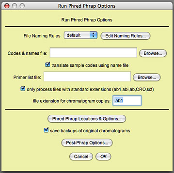
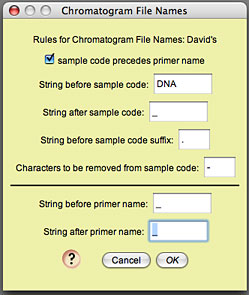
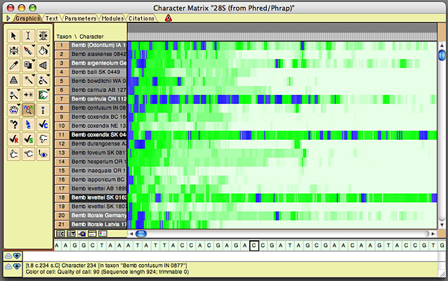
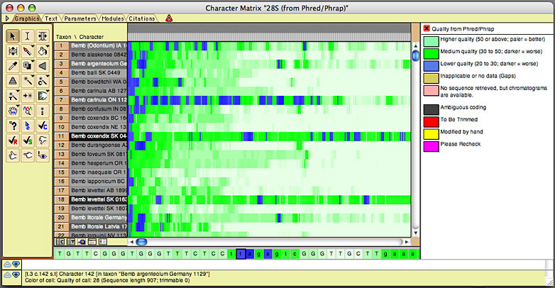
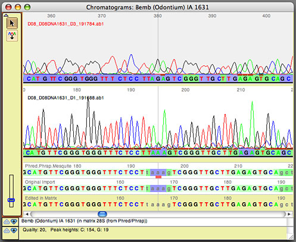
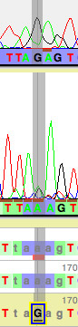
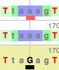

Preparing Phred, Phrap, and Phd2Fasta
Make sure Phred, Phrap, and Phd2Fasta are compiled and installed correctly, and the phredpar.dat file is edited correctly.
Preparing the primer file
You will need to create a primer file documenting the gene fragments and a list of the names of their forward and reverse primers.
Preparing the sample names file
If you wish for your sequences to be named by something other than the sample codes contained in the file name, then you will need to create a text file that contains a list of the sample codes and the names to which they should be translated. See "Sample names file" for a description of the format of this text file.
Assembling the sequences: Running Phred and Phrap
If you wish to ask Mesquite to organize the chromatogram files, have Phred and Phrap assemble the contigs, and have Mesquite process the results, importing them into a new project, then choose Open Other>Phred/Phrap Import from Chromatograms... from the File menu.
If you wish to ask Mesquite to do this but add the processed sequences to an existing project, then with that project open, choose Edit>Append Sequences From Chromatograms...
If you wish to ask Mesquite to do this but NOT import the sequences into a new or existing project, then choose Utilites>Run Phred and Phrap... when the Mesquite Log window is the frontmost window.
You will then be presented with a dialog box that looks something like this:

Defining a naming rule
The first thing to do is define a Naming Rule, which describes how the chromatogram files are named. In particular, you need to give Mesquite enough details so that it can exactly find the sample code and primer name within the file name. For example, one of the example chromatograms has as a file name:
A11_A11DNA0446_D3_340852.ab1
In this name, the sample code is present immediately following the distinctive string of characters "DNA". The sample code ends with an underscore ("_"). The primer name in this file name is "D3"; it is preceded by an underscore, and followed by an underscore. The rest of the name (except, if you choose, the extension ".ab1") is irrelevant to Mesquite. If you touch on Edit Naming Rule, and then in the list dialog that appears touch on New and give your rule a name, you will see a dialog in which you can edit the naming rule:

The default naming rule is one that matches the file "A11_A11DNA0446_D3_340852.ab1", as that's how David's files are named.
Adjust your naming rule to match your file name structure. Once a naming rule is defined, it will be saved to disk and it will be an option for you in the future in the popup menu beside "File Naming Rules" in the Phred/Phrap dialog box. All file names in the directory must use the same naming rule.
Setting the locations of files
Use the Browse button in the Phred/Phrap dialog box to choose the location of the file containing the sample names file (if you don't to translate the sample codes, then you can leave this box blank, but you should then uncheck "translate sample codes using names file").
Use the Browse button to choose your primer file.
Touch on the Phred Phrap Locations & Options button to set the locations of both the directory containing Phred, Phrap, and Phd2Fasta, as well as the location of the phredpar.dat file.
Setting other options
You can also set other options, including for the processing Mesquite does after Phred and Phrap examine the files. Explore Post-Phrap Options for some things you might change.
Press OK
You are now ready to have Phred and Phrap run. Press the OK button in the Run Phred Phrap dialog box. Mesquite's log window should show the details of the processing. You might want to bring this frontmost so that you can watch it. In addition, the operating system shell or Terminal should start up and you should see Phred and Phrap produce lots of information that scrolls by.
If you asked Mesquite to process your files and import the results into a Mesquite project, then you should see Mesquite open a character matrix editor and present you with the results.
Viewing the sequences in Mesquite's editor
Mesquite will present imported sequences organized with all sequences from one gene fragment together in one editor, with a different editor for each gene fragment. By default the editor will be shown in "bird's eye view" (as if from a distance, with each base occupying only a thin vertical strip), with the color of a base being related to the quality score for that base as judged by Phred and Phrap.

If you turn on the character matrix's Colors Legend (by touching on the button below the taxon names), you can see the meaning of the colors:

The color of the taxon name is in proportion to the number of high-quality bases in its sequence, with darker taxon names indicating fewer high-quality bases.
Viewing a sequence's chromatograms
To view the chromatograms underlying a sequence, touch on that sequence using the View Chromatogram Tool ( ). A window will appear containing that sequence's chromatograms:
). A window will appear containing that sequence's chromatograms:

The upper panels show the chromatogram traces. Ones with names in red and a pale gray background are reverse-complemented. The base colors under the traces are shown using the same quality score coloring as calculated by Phred and used in the imported matrix. At the bottom are three versions of the consensus sequence: the top one, the untrimmed version as produced by Phred/Phrap and as modified by Mesquite; the middle one, the trimmed version as originally imported into Mesquite; the bottom version, or edited version as it appears in the matrix. The bottom two will be identical unless you have changed the base calls. The colors of the bases in the top two of these sequences also indicates the base quality scores as determined by Phrap.
A few graphical features of note are:
- Conflicts between reads are shown as pink or red bars in the "Phred.Phrap.Mesquite" sequence panel. If the reads that conflict are of low quality, the bars will be pink; if they are of high quality, they will be red.
- The brown bars above a base call and under a peak in each read indicate that that peak was the one used by Phrap as the primary peak on which the call for the consensus was based.
- You can show or hide various element by using the Chromatograms>Show submenu, including traces of bases (e.g., hide the G trace).
- You can ask to have low-quality sections of reads dimmed so that they don't visually distract from the high-quality reads in those some regions.
One navigational feature of note is:
- The left and right arrow keys can be used to move along the chromatograms. You can choose (using the Chromatograms>Arrow Keys submenu) whether these move to the next base, the next base with a conflict, or the next low-quality base.
Changing base calls
Touching on a base in the bottom consensus sequence will select that base and allow you to edit it by typing in a new base:

Any base that has been so edited is marked by a black bar underneath it:

The new base call is directly transferred in the sequence in Mesquite's character matrix.